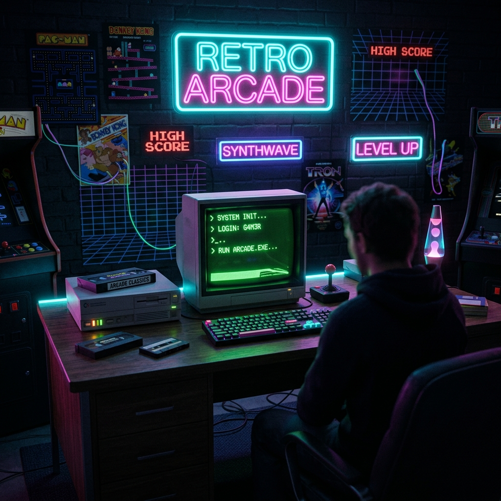

<title>CYBER-RETRO v2.0 // Arcade Gallery</title>
<link rel="stylesheet" href="style.css">
<script src="app.js"></script>
<header class="retro-header">
<a class="brand-logo" href="index.html">SYS://CYBER_RETRO</a>
<nav>
<ul class="nav-links">
<li>
<a class="nav-link" href="index.html">01.HOME</a>
</li>
<li>
<a class="nav-link" href="about.html">02.ABOUT</a>
</li>
<li>
<a class="nav-link active" href="gallery.html">03.GALLERY</a>
</li>
<li>
<a class="nav-link" href="guestbook.html">04.GUESTBOOK</a>
</li>
</ul>
</nav>
<div class="retro-controls">
<button id=""btnToggleCrt"" class="btn-retro">[CRT: ON/OFF]</button>
</div>
</header>
<main class="container">
<div class="terminal-card">
<div class="terminal-header">
<span class="dot dot-red">
</span>
<span class="dot dot-yellow">
</span>
<span class="dot dot-green">
</span>
<span>  gallery_arcade.viewer</span>
</span>
</div>
<h1 class="hero-title">RETRO ARCADE SHOWCASE</h1>
<p class="hero-subtitle">> Visual aesthetic artwork generated for EnLang retro UI showcase.</p>
<div class="hero-grid">
<div>

</div>
<div>
<h3 class="card-title">SYSTEM ARCHITECTURE 1988</h3>
<p class="card-desc">Inspired by vintage CRT computer terminals, analog synthesizers, and early cybernetic control panels.</p>
<button id=""btnBeep"" class="btn-retro">🔊 PLAY SYNTH SOUND</button>
</div>
</div>
</div>
</main>
<footer class="retro-footer">
<p>SYSTEM STATUS: 100% OPERATIONAL // BUILT WITH ENLANG v2.0 // SPANDAN PRAYAS PATRA © 2026</p>
</footer>
